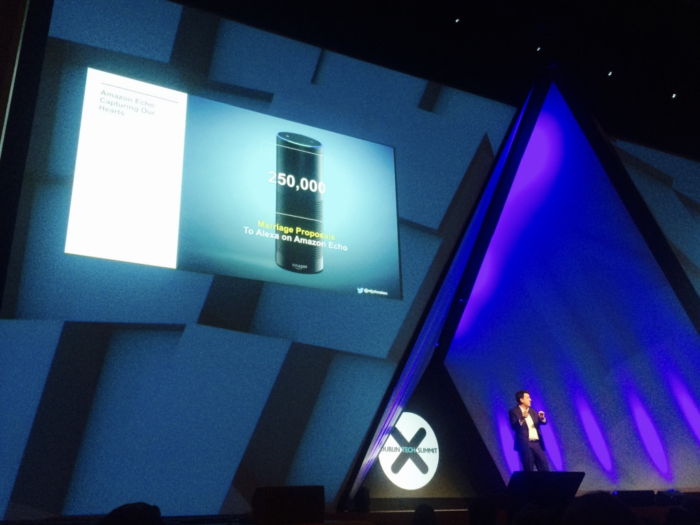

The Dublin Tech Summit was recently held at the impressive Convention Centre on Dublin’s dockside across two days of which I attended both. DTS wasn’t themed around a specific area of technology but instead included predicted technology trends for the year ahead such as IoT, Medtech and Big Data. The positives that not only other conferences but us as technologists can take away from DTS is what I will focus on here, as the negatives are trivial and are unrelated to the main point; the impact for attendees and why attending such well organised and varied themed conferences should be a priority for all those working in technology.
There are many other conferences that receive highly positive reviews and are well recommended, however I am bias here in this being my first such conference whereby there wasn’t a specific focus on one stream of technology. (I have attended others, but with a specific area of technology focus). Like many of us in the world of tech, I like to keep engaged with the community and to see what areas are going to make an impact in the present and upcoming years. In particular I'm currently interested in Medtech as this is an area which has so much potential for technology to make a significant impact, so attending DTS I was looking forward to hearing from key speakers currently associated in the field.
I found DTS to be not only extremely well organised and showcasing excellent speakers but the fact that 48% of attendees were women was a great indicator of DTS's commitment to pushing for a diverse conference. So how was this achieved? DTS ran a campaign that gave €400,000 worth of tickets away to under-represented groups in the tech industry, including women and students. The campaign clearly worked as walking around the convention center over the two days, there was a clear mix of both female and male attendees. I have attended conferences previously where I can count on one hand the number of women attendees, therefore with the initiatives DTS used working, highlighted positive progression towards achieving more diversity at such events, which other conferences can learn from. Diversity is spoken about a lot within technology and it needs to be. A diverse, well organised and engaging conference are all factors that are key for successful teams, companies and people and there is clear evidence supporting this, which is where DTS scored highly on promoting a diverse environment.
The first talk I saw was my overall favourite and there was definitely transferable knowledge to take away from it. Matthew Luhn, a writer at Pixar, spoke about the ‘Art of Storytelling’
“People won’t necessarily remember everything you’ve told them, but they will remember how you made them feel”
This is can be seen metaphorically in software development and with the relationships you build working with clients. As software engineers we want to not only build and design great solutions, but should always be keeping in mind forming strong working relationships too. Yes we spend a good proportion of our time on a machine writing code, but to come to that point we have to first interact with each other and produce great design. Plus the interaction shouldn't just end once an architectural design has been put together. If adopting an agile work environment (which I hope is always the case) change will probably happen, and this shouldn't be a negative. Therefore if you're working in a truly agile way, interaction will be continuous in every step of the development cycle and ensuring you have a open healthy environment for this, is crucial to a successful end product. Enthused and motivated teams produce success and clients should always be part of this process.
Working in technology we are fully aware of the fast-changing nature of the industry and the importance of keeping up to date with the latest developments. This is important not only for self-development but will bring value to your company with the work that you do. Looking at this from the viewpoint of a consultancy, projects will always vary in their required technology stack and it is unlikely you will be using the same language, framework or tool for each project you are involved in. Therefore it is perhaps even more relevant to anyone working fo a consultancy that we go and encourage others to attend diverse conferences.
This post is not to undermine the importance of specific tech focused conferences. Of course if you specialise in ReactJS you should go to a ReactJS conference. But I'm promoting attending a varied themed conference also. I came away at the end of the two days feeling not only inspired but with new applicable transferable knowledge that will be used in the work place. This was the outcome I was hoping for and DTS exceeded all initial expectations. I encourage anyone working in technology to go and see DTS for themselves in 2018.